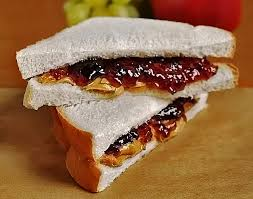

Peanut Butter & Jelly

Description
This recipe is how to make a simple peanut butter and jelly sandwich. Unlike the pizza recipe, the ingridents are real. The objective of this site is to prove I have learned skills in coding. A peanut butter and jelly sandwich contains peanut butter, crunchy or smooth, and jelly;which is typically grape.
Ingridients
- Bread
- Crunchy Peanut Butter
- Grape Jelly
Steps
- Prepare your slices of bread: 2 for each sandiwch
- Spread peanut butter on the inside of both slices of bread
- Add globs of jelly onto one prepared bread slice
- Combine the slices of bread
- Repeat if more sandwiches are desired
HOME